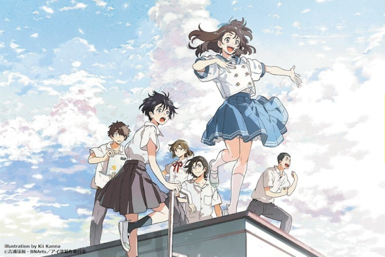
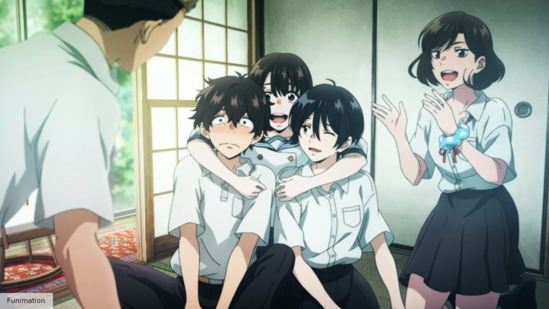

前言
這部看似不起眼的作品，但卻在看完的當下非常滿足。整部起承轉合皆非常到位，筆者認為少數的缺點就是「支線稍微多了些」，而其他部分皆相當完美！只可惜這種獨立的作品，通常卻相對冷門…
筆者認為，本作將AI描繪得非常得好，再搭配「青春」以及「回憶」，貫串了整部作品的主軸！
本作大概是短期內，筆者看過最棒且最喜歡的作品了，看完時有想多刷幾遍的想法，但可惜的是，筆者是第二週才去看的，場次已經很少了，感覺快要下檔了，有興趣的讀者們快去戲院刷爆啊！（都快下檔了才發文）
作品簡介

由吉浦康裕執導（代表作：《顛倒的帕蒂瑪》、《夏娃的時間》等）、J.C. STAFF製作
獲2021年紐約國際電影電視節 最佳動畫電影獎
日本於2021/10/29上映，而台灣則由木棉花於2022/02/11代理上映
中文版官方PV：https://youtu.be/75wYFpEE3GM
故事背景與大綱
故事背景建立在近未來，人類的生活起居、產業娛樂逐漸與AI共存，劇中的AI與現今現實生活中的AI較為接近，大概就是再發達一些而已。某天，做為普通高中生、但常感到孤獨的少女「天野悟美」，因迷之轉學生「蘆森詩音」的到來，而使生活發生劇烈的轉變。而悟美一開始就知道──這名叫詩音的少女，正是她母親費力多年所研究出的試驗型AI機器人的成果。
而整部作品，也都圍繞著詩音這名AI少女，詩音帶領著她一步步聚集的朋友們，共同化解了青春的尷尬、不快及後悔，遵循著「讓你幸福」這個「命令」，不斷創造屬於他們的「回憶」。
官方中文版 PV
科幻與青春的結合
筆者本身是資訊相關科系，因此每次對於這種科幻題材，都非常感興趣。劇中將「AI」描繪的非常棒，即使有些理論是瞎掰的，但這些都不影響觀影體驗，反而還覺得有趣。本作透由「AI」這種「只會遵循命令的機器」，帶出了非常精采的青春劇情，只是筆者認為支線真的有些多了，導致情感醞釀稍顯不足，若少一條支線，或許感覺就會完全不同（也許筆者就會哭了）。但當然，本作的主軸還是沒有偏掉，且也是很出色的！
本作的主軸皆環繞在「青春」與「回憶」。為什麼筆者會一直強調「回憶」是主軸呢？我想，讀者們應該要自己親自欣賞這部作品後，自然就會明白，筆者認為這部分的呈現手法非常出色，並貫串了整部作品的核心！「所謂秘密，就是要到最後才會知道唷！」
「悟美…悟美…，妳在哪？……悟美，找到妳了！妳現在，幸福嗎？」 ──無論在哪，我都會找到妳，因為我AI（愛）啊。我們都知道，AI除了代表人工智慧外，同時也是「愛」的日文諧音，而本部作品也算是將其運用到極致呢！

以音樂劇形式襯托劇情
本部作品除了上述筆者認為的主軸外，還交織了三條支線來豐富整個故事，而每個支線皆有一首曲子，並以音樂劇方式呈現，分別是「Umbrella」、「Lead your partner」與「you’ve got friends ~あなたには友達がいる~」，皆是詩音的聲優土屋太鳳所演唱，真的是十分悅耳，當下離開電影院腦袋也還在播放音樂（已經不知道刷幾遍了xD）。因為是音樂劇形式，所以每首曲子對應到的支線，其歌詞也都吻合該支線的故事。
音樂劇主要是借鑑迪士尼的公主系列，其也在劇情中佔有一席之地，在劇中是悟美最喜歡的動畫。
另外，以歌唱的手法，來做為情感上的輸出，我認為是優點，不過小可惜的是詩音剛登場時，當時的唱歌真的有些違和感，但後續的表現就都非常出色了！藉由歌唱來達到情感面的輸出，真的很能打動人心，不過問題也如同上述所說，情感醞釀稍顯不足，可惜了。
總結
綜合上述，筆者非常喜歡本部作品，即使它有些微缺點，而本篇心得是無雷，因此筆者也不想說太多了，所以想看的讀者們，快把握在下檔前去看爆啊！
總之，這絕對是一部非常值得一看得作品，筆者非常推薦給各位讀者看！看完後也能去看看木棉花頻道貼出的好幾片訪談內容（連結整理下方），筆者看完後覺得都很有意思，導演的想法都很有趣呢！其中出現了關於人類愛上AI的小元素，稍微點綴了劇情，真的有趣XD。
AI的世界離我們真的不遙遠，我想，我們於各科幻作品中看到的樣貌，未來一定會實現的！另外，「回憶」也是非常重要的！